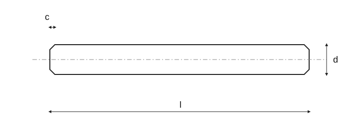

Незакалённые цилиндрические штифты — ISO 2338
Исторический источник: числа, исключения и примечания ожидают полной нормативной проверки.

Незакалённые цилиндрические штифты — ISO 2338 · 1 · 0,6 – 2
| d | 0,6 | 0,8 | 1 | 1,2 | 1,5 | 2 |
|---|---|---|---|---|---|---|
| a ≈ | 0,08 | 0,1 | 0,12 | 0,16 | 0,2 | 0,25 |
| c ≈ | 0,12 | 0,16 | 0,2 | 0,25 | 0,3 | 0,35 |
Незакалённые цилиндрические штифты — ISO 2338 · 1 · 2,5 – 5
| d | 2,5 | 3 | 4 | 5 |
|---|---|---|---|---|
| a ≈ | 0,3 | 0,4 | 0,5 | 0,63 |
| c ≈ | 0,4 | 0,5 | 0,63 | 0,8 |
Незакалённые цилиндрические штифты — ISO 2338 · 2 · 6 – 20
| d | 6 | 8 | 10 | 12 | 16 | 20 |
|---|---|---|---|---|---|---|
| a ≈ | 0,8 | 1 | 1,2 | 1,6 | 2 | 2,5 |
| c ≈ | 1,2 | 1,6 | 2 | 2,5 | 3 | 3,5 |
Незакалённые цилиндрические штифты — ISO 2338 · 2 · 25 – 50
| d | 25 | 30 | 40 | 50 |
|---|---|---|---|---|
| a ≈ | 3 | 4 | 5 | 6,3 |
| c ≈ | 4 | 5 | 6,3 | 8 |
Незакалённые цилиндрические штифты — ISO 2338 · 3 · 0,6 – 1,5
| l | Δl | 0,6 | 0,8 | 1 | 1,2 | 1,5 |
|---|---|---|---|---|---|---|
| 2 | ±0,25 | + | + | — | — | — |
| 3 | ±0,25 | + | + | — | — | — |
| 4 | ±0,25 | + | + | + | + | + |
| 5 | ±0,25 | + | + | + | + | + |
| 6 | ±0,25 | + | + | + | + | + |
| 8 | ±0,25 | — | + | + | + | + |
| 10 | ±0,25 | — | — | + | + | + |
| 12 | ±0,5 | — | — | + | + | + |
| 14 | ±0,5 | — | — | — | — | + |
| 16 | ±0,5 | — | — | — | — | + |
| 18 | ±0,5 | — | — | — | — | — |
| 20 | ±0,5 | — | — | — | — | — |
| 22 | ±0,5 | — | — | — | — | — |
| 24 | ±0,5 | — | — | — | — | — |
| 26 | ±0,5 | — | — | — | — | — |
| 28 | ±0,5 | — | — | — | — | — |
| 30 | ±0,5 | — | — | — | — | — |
| 32 | ±0,5 | — | — | — | — | — |
| 35 | ±0,5 | — | — | — | — | — |
| 40 | ±0,5 | — | — | — | — | — |
| 45 | ±0,5 | — | — | — | — | — |
| 50 | ±0,5 | — | — | — | — | — |
| 55 | ±0,75 | — | — | — | — | — |
| 60 | ±0,75 | — | — | — | — | — |
| 65 | ±0,75 | — | — | — | — | — |
| 70 | ±0,75 | — | — | — | — | — |
| 75 | ±0,75 | — | — | — | — | — |
| 80 | ±0,75 | — | — | — | — | — |
| 85 | ±0,75 | — | — | — | — | — |
| 90 | ±0,75 | — | — | — | — | — |
| 95 | ±0,75 | — | — | — | — | — |
| 100 | ±0,75 | — | — | — | — | — |
| 120 | ±0,75 | — | — | — | — | — |
| 140 | ±0,75 | — | — | — | — | — |
| 160 | ±0,75 | — | — | — | — | — |
| 180 | ±0,75 | — | — | — | — | — |
| 200 | ±0,75 | — | — | — | — | — |
Незакалённые цилиндрические штифты — ISO 2338 · 3 · 2 – 5
| l | Δl | 2 | 2,5 | 3 | 4 | 5 |
|---|---|---|---|---|---|---|
| 2 | ±0,25 | — | — | — | — | — |
| 3 | ±0,25 | — | — | — | — | — |
| 4 | ±0,25 | — | — | — | — | — |
| 5 | ±0,25 | — | — | — | — | — |
| 6 | ±0,25 | + | + | — | — | — |
| 8 | ±0,25 | + | + | — | — | — |
| 10 | ±0,25 | + | + | + | + | + |
| 12 | ±0,5 | + | + | + | + | + |
| 14 | ±0,5 | + | + | + | + | + |
| 16 | ±0,5 | + | + | + | + | + |
| 18 | ±0,5 | + | + | + | + | + |
| 20 | ±0,5 | + | + | + | + | + |
| 22 | ±0,5 | — | + | + | + | + |
| 24 | ±0,5 | — | + | + | + | + |
| 26 | ±0,5 | — | — | + | + | + |
| 28 | ±0,5 | — | — | + | + | + |
| 30 | ±0,5 | — | — | + | + | + |
| 32 | ±0,5 | — | — | — | + | + |
| 35 | ±0,5 | — | — | — | + | + |
| 40 | ±0,5 | — | — | — | + | + |
| 45 | ±0,5 | — | — | — | — | + |
| 50 | ±0,5 | — | — | — | — | + |
| 55 | ±0,75 | — | — | — | — | — |
| 60 | ±0,75 | — | — | — | — | — |
| 65 | ±0,75 | — | — | — | — | — |
| 70 | ±0,75 | — | — | — | — | — |
| 75 | ±0,75 | — | — | — | — | — |
| 80 | ±0,75 | — | — | — | — | — |
| 85 | ±0,75 | — | — | — | — | — |
| 90 | ±0,75 | — | — | — | — | — |
| 95 | ±0,75 | — | — | — | — | — |
| 100 | ±0,75 | — | — | — | — | — |
| 120 | ±0,75 | — | — | — | — | — |
| 140 | ±0,75 | — | — | — | — | — |
| 160 | ±0,75 | — | — | — | — | — |
| 180 | ±0,75 | — | — | — | — | — |
| 200 | ±0,75 | — | — | — | — | — |
Незакалённые цилиндрические штифты — ISO 2338 · 3 · 6 – 16
| l | Δl | 6 | 8 | 10 | 12 | 16 |
|---|---|---|---|---|---|---|
| 2 | ±0,25 | — | — | — | — | — |
| 3 | ±0,25 | — | — | — | — | — |
| 4 | ±0,25 | — | — | — | — | — |
| 5 | ±0,25 | — | — | — | — | — |
| 6 | ±0,25 | — | — | — | — | — |
| 8 | ±0,25 | — | — | — | — | — |
| 10 | ±0,25 | — | — | — | — | — |
| 12 | ±0,5 | + | — | — | — | — |
| 14 | ±0,5 | + | + | — | — | — |
| 16 | ±0,5 | + | + | — | — | — |
| 18 | ±0,5 | + | + | + | — | — |
| 20 | ±0,5 | + | + | + | — | — |
| 22 | ±0,5 | + | + | + | + | — |
| 24 | ±0,5 | + | + | + | + | — |
| 26 | ±0,5 | + | + | + | + | + |
| 28 | ±0,5 | + | + | + | + | + |
| 30 | ±0,5 | + | + | + | + | + |
| 32 | ±0,5 | + | + | + | + | + |
| 35 | ±0,5 | + | + | + | + | + |
| 40 | ±0,5 | + | + | + | + | + |
| 45 | ±0,5 | + | + | + | + | + |
| 50 | ±0,5 | + | + | + | + | + |
| 55 | ±0,75 | + | + | + | + | + |
| 60 | ±0,75 | + | + | + | + | + |
| 65 | ±0,75 | — | + | + | + | + |
| 70 | ±0,75 | — | + | + | + | + |
| 75 | ±0,75 | — | + | + | + | + |
| 80 | ±0,75 | — | + | + | + | + |
| 85 | ±0,75 | — | — | + | + | + |
| 90 | ±0,75 | — | — | + | + | + |
| 95 | ±0,75 | — | — | + | + | + |
| 100 | ±0,75 | — | — | — | + | + |
| 120 | ±0,75 | — | — | — | + | + |
| 140 | ±0,75 | — | — | — | + | + |
| 160 | ±0,75 | — | — | — | — | + |
| 180 | ±0,75 | — | — | — | — | + |
| 200 | ±0,75 | — | — | — | — | — |
Незакалённые цилиндрические штифты — ISO 2338 · 3 · 20 – 50
| l | Δl | 20 | 25 | 30 | 40 | 50 |
|---|---|---|---|---|---|---|
| 2 | ±0,25 | — | — | — | — | — |
| 3 | ±0,25 | — | — | — | — | — |
| 4 | ±0,25 | — | — | — | — | — |
| 5 | ±0,25 | — | — | — | — | — |
| 6 | ±0,25 | — | — | — | — | — |
| 8 | ±0,25 | — | — | — | — | — |
| 10 | ±0,25 | — | — | — | — | — |
| 12 | ±0,5 | — | — | — | — | — |
| 14 | ±0,5 | — | — | — | — | — |
| 16 | ±0,5 | — | — | — | — | — |
| 18 | ±0,5 | — | — | — | — | — |
| 20 | ±0,5 | — | — | — | — | — |
| 22 | ±0,5 | — | — | — | — | — |
| 24 | ±0,5 | — | — | — | — | — |
| 26 | ±0,5 | — | — | — | — | — |
| 28 | ±0,5 | — | — | — | — | — |
| 30 | ±0,5 | — | — | — | — | — |
| 32 | ±0,5 | — | — | — | — | — |
| 35 | ±0,5 | + | — | — | — | — |
| 40 | ±0,5 | + | — | — | — | — |
| 45 | ±0,5 | + | — | — | — | — |
| 50 | ±0,5 | + | + | — | — | — |
| 55 | ±0,75 | + | + | — | — | — |
| 60 | ±0,75 | + | + | + | — | — |
| 65 | ±0,75 | + | + | + | — | — |
| 70 | ±0,75 | + | + | + | — | — |
| 75 | ±0,75 | + | + | + | — | — |
| 80 | ±0,75 | + | + | + | + | — |
| 85 | ±0,75 | + | + | + | + | — |
| 90 | ±0,75 | + | + | + | + | — |
| 95 | ±0,75 | + | + | + | + | + |
| 100 | ±0,75 | + | + | + | + | + |
| 120 | ±0,75 | + | + | + | + | + |
| 140 | ±0,75 | + | + | + | + | + |
| 160 | ±0,75 | + | + | + | + | + |
| 180 | ±0,75 | + | + | + | + | + |
| 200 | ±0,75 | + | + | + | + | + |